内容要点
账号「Coach乔智」约 3 分 48 秒讲解「跨步跑」问题跑姿：身体怕摔而把脚伸到身前找支撑，落地像硬筷子制动，易让膝盖不适；纠正方向是把整条腿练成「弹簧」——落点靠近重心下方、主动向臀提拉，并用糖葫芦中轴与靠墙前倾把核心与前倾姿态练稳。以下为作者观点纪实；ASR 原为繁体，已转简体，「假像→想象」「推灯→推蹬」「适能→弹性能」等按语境校正。
知识结构
膝盖不适 ↔ 前伸落地；筷子硬撑 vs 弹簧缓冲。
头顶到两脚间成轴；提拉时脚向上、大腿略前摆，忌后撩/瞎高抬。
原地跑到位后再前倾；靠墙保压力练踢腿/慢跑，去掉墙仍保持前倾。
落点靠近重心、向臀提拉、弹簧轻落并助推向前。
先把原地跑的弹簧落地与提拉练「到位」，再叠加可控前倾；用墙面压力当作核心反馈，避免推蹬跳起。
00:00–01:20筷子变弹簧与中轴
开场把膝盖不适与「脚往前撩、落在身前」的跨步习惯挂钩：落地腿像硬筷子，缺少缓冲。纠正是落在更靠近身体的位置，让髋膝踝串联成弹簧。随后用「头顶穿针到两脚之间」糖葫芦隐喻，要求头、躯干、骨盆绕稳定中轴转动，肩带放松。
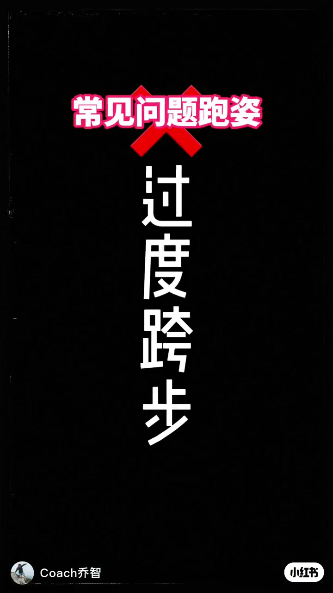
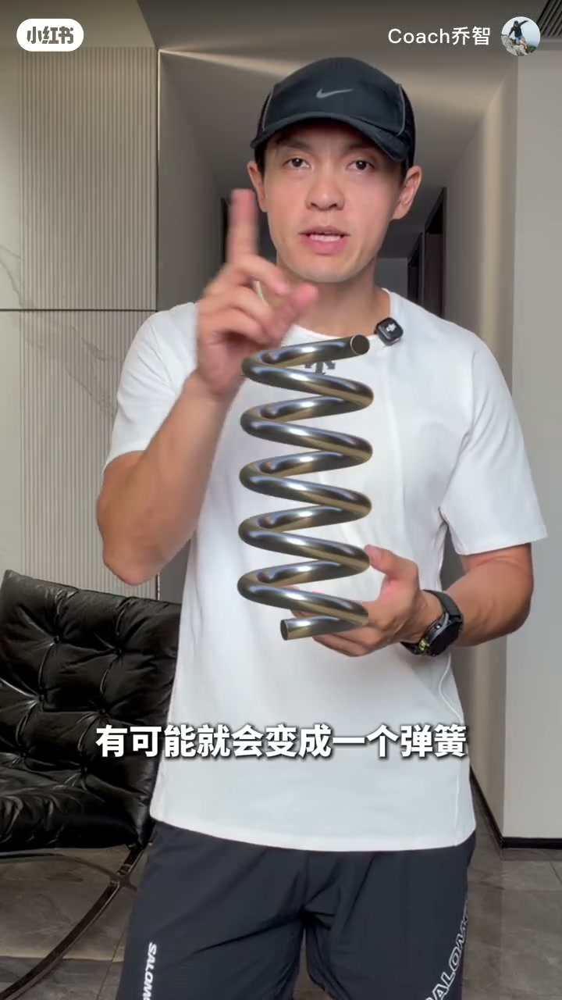
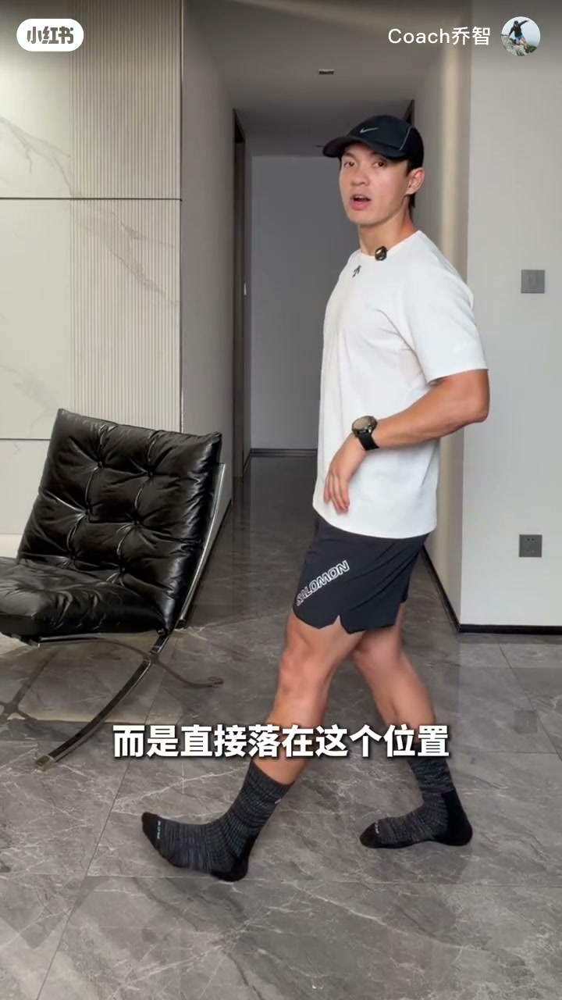
01:20–02:40提拉与靠墙前倾
提拉练习强调脚向上、大腿略前摆，小跑中低位拉到中间再拉高，上身保持挺直。原地姿势稳定后才引入身体前倾——需要核心像平板撑。靠墙前倾时手要感到墙面压力，脚仍向髋提拉，每侧约 20 次，再过渡到慢跑与交替踢腿。
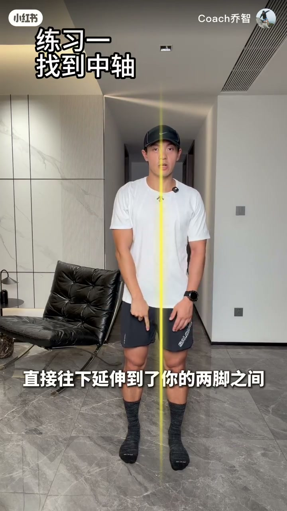
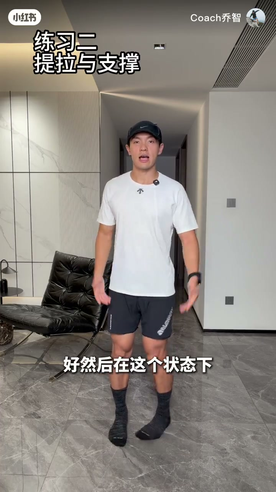
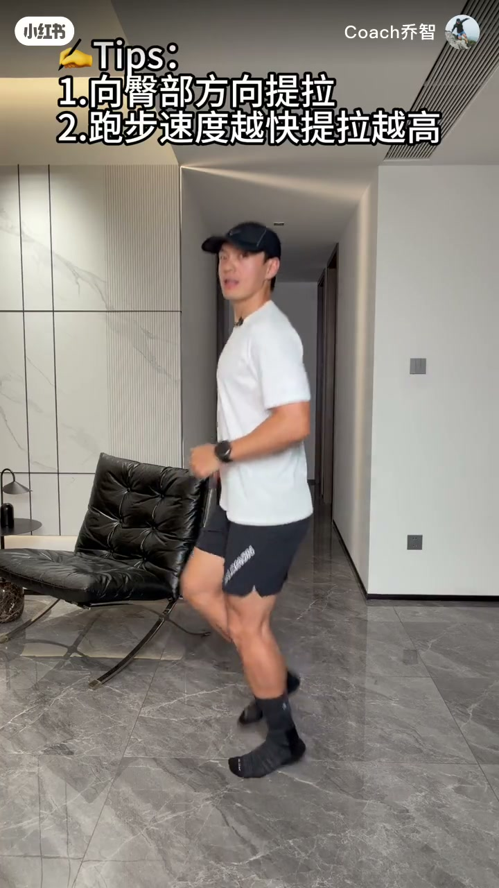
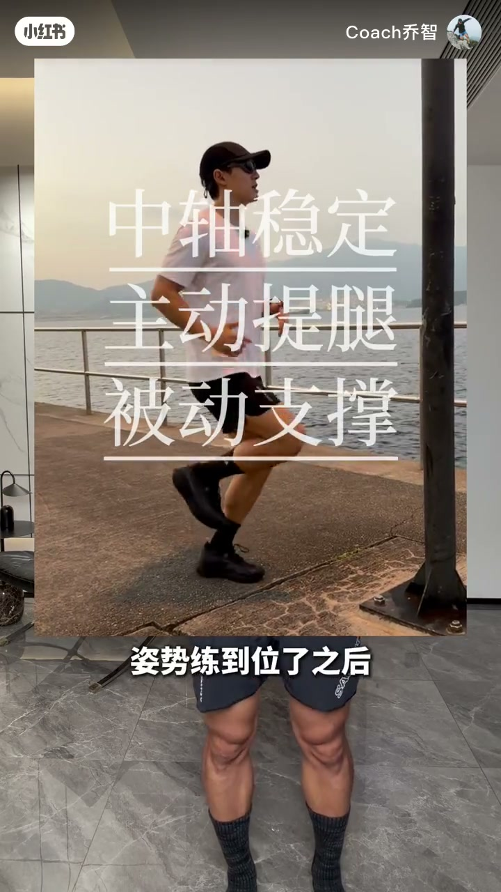
02:40–03:48去墙保持前倾与收束
提醒减少上下起伏，不要推蹬跳起，落地要自然。想象墙突然消失，身体仍维持前倾、双腿原地跑。最终口令：落地靠近重心下方，主动向臀提拉，用下肢弹簧轻盈落地并助力前移。
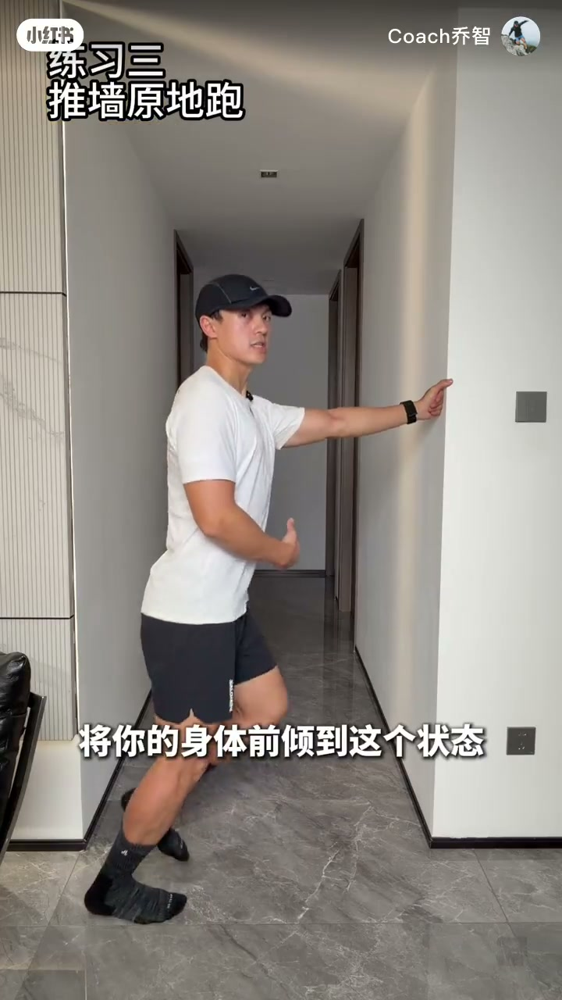
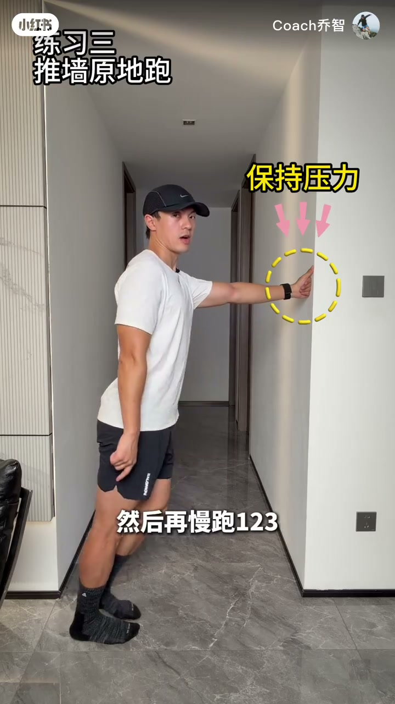
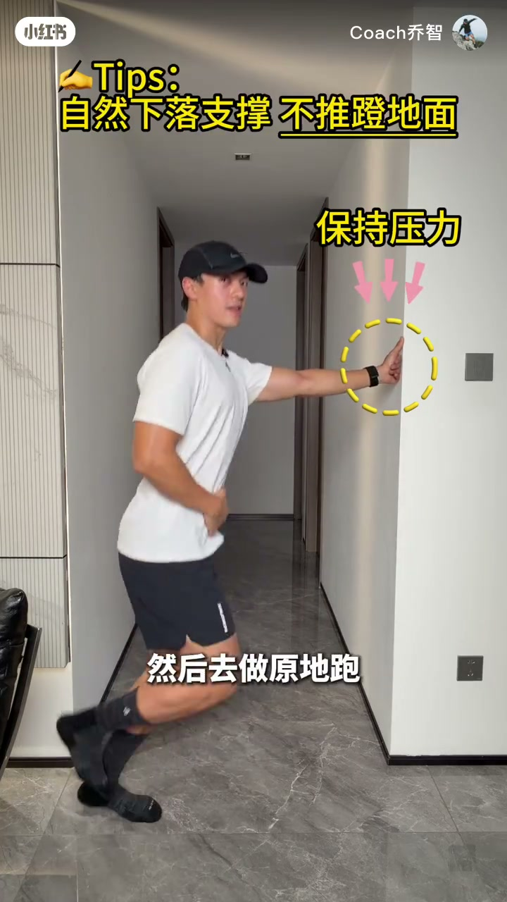
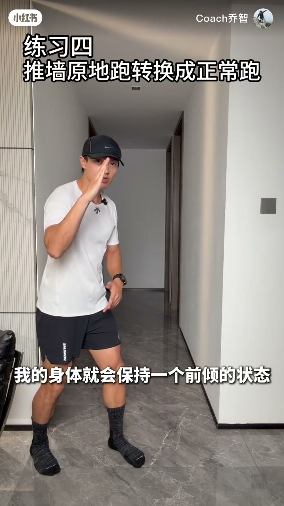
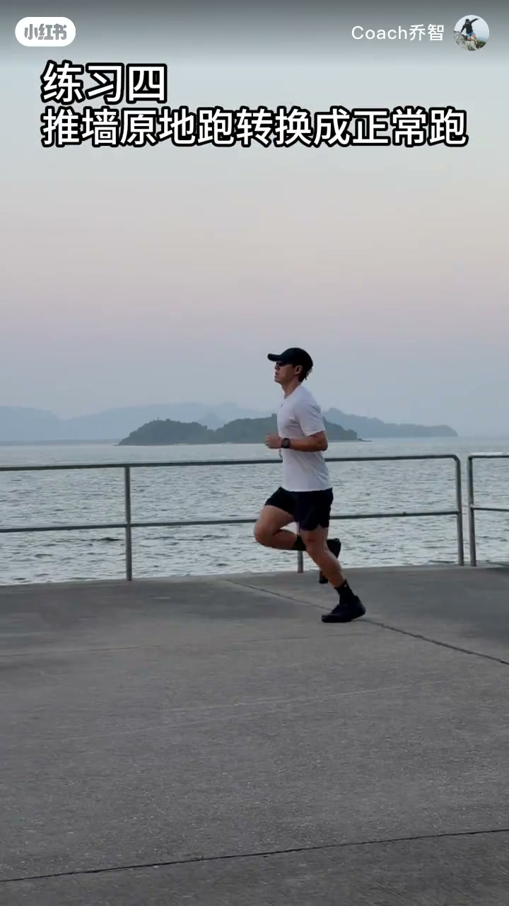
完整转录
这可能就是你跑完之后膝盖不舒服的原因
OK我们先来看一一一一一一一一一一一一一一一一一一一
这个筷子有可能就会变成一个弹簧
这个弹簧它是有缓冲有弹性的
怎么能把筷子变成弹簧呢
就是你不要把你的脚往前撩
而是直接落在这个位置
你的整个腿就是一个弹簧
而且落得很轻
你的关节也会比较舒适
大家可以跟我一起练一下
假像你的头顶穿了一根针
直接往下延伸到了你的两脚之间
你被穿成了一个糖葫芦
头延伸中轴转
躯干延伸中轴转
骨盆延著中轴转
轴是稳定的
那么你的肩膀都可以转动
是一个放松的一个连成轴的一个状态
然后在这个状态下我们去练提拉
拉的时候脚要往上
并且大腿有一些前摆
不要往后撩也不要高抬腿
在小跑的时候去拉
这边小跑这边拉
这边小跑这边拉
两边一起拉得低一点拉到中间保持上身挺直好拉到最高而且每一次
三分配会在这个位置
通过刻意的练习把你在原地跑的这个姿势练到位了
之后我们再让你的身体前倾
前倾的时候为什么很多人就做不好了
它需要你核心的能力
就像做平板撑一样
你看你站著做平板简单
那你在地面上做平板就难了
接下来我们可以找一面墙去练习
将你的身体前倾到这个状态
你能感觉到你的手和墙面的压力
然后保持这个压力去练习一下踢腿
这个脚依然拉向你的髋
一边20次
换边20次
手的压力是在的
然后再慢跑
1 2 3
然后再交替踢腿
1 2 3
然后再慢跑
保持你向前的前倾的状态
然后去做原地跑
然后尽量减少上下的起伏
不要推灯
你要如果推灯的话就跳起来了
我们不要跳
每次都是自然的落
好现在你的手其实这个压力是一直在的
只是因为前面有东西遮挡我
我没有跑起来
假装前面的这个墙突然没了呢
我的身体就会保持一个前倾的状态
你的双腿在一直在做原地跑
就像是这个视频里的一个状态一样
上半身尽量的挺直
让每一次落地的时候要靠近身体重心下方
主动的把你的脚去向上
向你的臀部的方向拉起
在支撑的时候能够充分的利用我们下肢的这个弹簧去轻盈的落地
同时呢又能够利用弹簧的适能
帮助你更好的提拉、更好的向前
OK这篇视频就跟大家分享到这儿
关注我陪你一起把跑姿练好